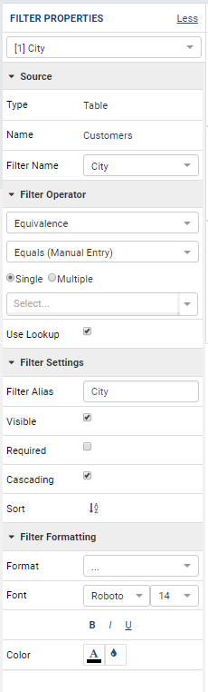

Report Designer/Design¶
Tip
Cross Filtering is available from release v2.1.0.
The Report Designer/Design page allows user to
|
|
View data source fields¶
-
Open an existing report if not already open.
Click Design in the left menu. (Fig. 183)
-
Data sources will be displayed under Selected Data Source group in the Middle Panel, initially collapsed.
User-defined calculated fields are under Calculated Fields group, if available.
Click on a data source to expand its fields.
The data source fields are listed together with an icon representing their data types. (Fig. 184)
{kind=link}
{kind=link}
Note
The list of data source fields also supports searching via the top search box.
View data source fields’ properties¶
-
Select a data source field to view its properties.
Properties of the selected field is displayed in the Field Properties box. (Fig. 185)
{kind=link}
Add Calculated Field¶
Calculated fields can also be added to a specific report.
{kind=link}
Sample expressions:
Case when ([northwind].[dbo].[Orders].[EmployeeID] = 1) then 'less' when ([northwind].[dbo].[Orders].[EmployeeID] = 3 ) then 'mid' when ([northwind].[dbo].[Orders].[EmployeeID] = 4) then 'high' else 'not evaluated' end Case when (BETWEEN([northwind].[dbo].[Orders].[EmployeeID], 1,3)) then 'less' when (BETWEEN([northwind].[dbo].[Orders].[EmployeeID], 4,6) ) then 'mid' when ( BETWEEN([northwind].[dbo].[Orders].[EmployeeID], 7,10)) then 'high' else 'not evaluated' end IF ([northwind].[dbo].[Orders].[EmployeeID] < 3) then 'Less' else ( IF (BETWEEN ([northwind].[dbo].[Orders].[EmployeeID] , 3, 6)) then 'More' else 'Most' END) END Count(DISTINCT([Northwind].[dbo].[Orders].[ShipCity])) DATEPART(yyyy,[Northwind].[dbo].[Orders].[OrderDate]) DATEPART(m,[Northwind].[dbo].[Orders].[OrderDate]) CASE when (DATEPART(yyyy,[Northwind].[dbo].[Orders].[OrderDate]) = 1996) then 1 else 0 end DATEADD(year,1,[Northwind].[dbo].[Orders].[OrderDate]) CAST([Northwind].[dbo].[Orders].[OrderID] as text)
Add a report filter¶
From the data sources, user can add report filters to select only the rows that they need.
For example with Northwind database, to do a report on customers that are in Atlanta city:
- 
Fig. 186 Report Designer - Filter Properties
User should have selected “Customers” table in Data Source page.
Click Fields in the left menu.
Expand Filter section if needed by clicking the > icon.
Click on Selected Data Source in Middle Panel to expand the list.
Click on “Customers” data source to expand its fields.
Either drag the field “City” into the Filter box or click Add Filter button and select “City” in the drop-down.
Click on the filter area outside of the drop-down (in darker color) to expand the Filter Properties box. (Fig. 187)
The properties are listed in Filter Properties box in 3 sections (Fig. 186):
- Source
- Filter Settings
- Filter Formatting
Select Equivalence in Filter Operator drop-down in Filter Settings section.
Select Equals (Manual Entry) in the next drop-down.
Type in “Atlanta”.
{kind=link}
{kind=link}
Note
Any field marked as not filterable in Data Model cannot be used in a filter. It can neither be dragged into the Filter box, nor appear in a filter drop-down.
{kind=link}
Configure filter properties in Filter Settings section¶
In this section, user can:
Choose a filter alias.
This alias will be the display text on report at runtime, if visible. The alias must be unique inside the whole report. Any duplicated value will result in an error message (Fig. 189). The alias can contain any characters except for “[” and “]”.
Select the filter to be visible or not at runtime.
A filter with a fixed condition (such as “City” always equals “Atlanta”) should be hidden at runtime.
Select the filter to be required or not.
A required filter will force end-user to enter filter values in order to run it. Contrary to a fixed condition, the example report above could be more flexible if the “City”-equals-“Atlanta” filter is visible and not required. Then the report still shows customers in Atlanta by default, but end-user can select another city or even empty the value to show all customers. Screenshot to be updated.
Select the filter to be cascading or not.
A cascading filter will constrain the available values in other filters behind it. For example, if a report has two filters: Country and City, and a value was selected for Country, then the only possible values that can be selected for City will be ones with a match for the current Country. Screenshot to be updated.
Choose sorting order for filter values: unsorted, ascending or descending by repeatedly clicking the icon.
Select the filter condition.
{kind=link}
{kind=link}
| Operator Type / Operator | Text | Numeric | Money | Datetime | Boolean | Image | LOB |
|---|---|---|---|---|---|---|---|
| .../Blank/Not Blank | Y | Y | Y | Y | Y | ? | ? |
| Comparison | Y | Y | Y | Y | Y | ? | ? |
| Equivalence | Y | Y | Y | Y | Y | ? | ? |
| Field Comparison | Y | Y | Y | Y | Y | ? | ? |
| Date & Time | Y | ||||||
| String | Y | ||||||
| Boolean | Y |
Configure filter properties in Filter Formatting section¶
In this section, user can:
- Choose a font face and font size.
- Choose text effects bold, italic and underlined.
- Set text color and cell color.
Build complex filter logic¶
In most cases, user simply adds new filters when needed, and the report returns data that matches all of the filter conditions.
In some other cases, that simple match-all condition is not enough. For example, user needs a report of all customers that are in Atlanta city with either CompanyName or ContactName “John”. Such “either A or B” condition requires building a filter logic.
Add a filter for “City”, “Equivalence”, “Equals”, “Atlanta” (see Add a report filter).
Similarly, add a filter for “CompanyName”, “String”, “Like”, “John”.
Similarly, add a filter for “ContactName”, “String”, “Like”, “John”.
The filters are subsequently numbered 1, 2 and 3 in the filter box.
Enter the logic into Filter Logic box. The following rule of thumb may help:
For each “either A or B” condition, write an “or” condition using the filter numbers, and wrap it in parentheses -
(2 OR 3)for this example.Fill in other “and” conditions using the filter numbers -
1 AND (2 OR 3)for this example.Click Validate Syntax button to check the logic.
.png){kind=link}
Apply Cross Filtering to Multiple Report Parts¶
New in version 2.1.0.
Cross filtering allows user to drill up and drill down data in multiple report parts together. For each drilling action from user, it will filter related report parts automatically. Cross filtering is initalized on charts, gauges, or maps which have more than one x-axis field as the drill down feature of these items is what triggers the cross fitlering functionality for all other report parts.
{kind=link}
Fig. 192 Cross Filtering Sample - User drilled down to “Germany” in the Chart, and the Grid is automatically filtered by “Germany” only.
Select related report parts to apply cross filtering. In this example Chart and Grid will be drilled up and down together while Map remains independent.
Set up report parts to have common data source fields. In this example Chart and Grid display aggregated data for ShipCountry and ShipCity.
Drill down on one report part by clicking on a data point.
The related report parts are filtered automatically, and the Cross Filtering breadcrumb tells which report part is being drilled down. (Fig. 192)
To reset, either drill up the exact report part, or remove the drill-down on the breadcrumb.
{kind=link}
{kind=link}
{kind=link}
Manage Report Parts¶
There are many ways to display data in a report: bar chart, line chart, pie chart, map, data grid, etc, each is supported by a different report part. Built-in report parts include:
- Chart (Bar Chart, Line Chart, Pie Chart, etc.)
- Form
- Grid (Horizontal, Vertical, Pivot)
- Gauge
- Map
Any new report will include one default blank report part. Additional report parts of the same or different types can be added by:
clicking Add Report Part button at the top.
clicking the add icon (+) in any available background cell. (Fig. 196)

Fig. 196 Report Designer - Add Report Part
clicking the copy icon in the configuration header.
{kind=link}
A report part can be removed by clicking the delete icon in the configuration header.
{kind=link}
Report parts can be resized, dragged to a new location, or switched position with each other in Preview Mode.
{kind=link}
To resize:
- Hover the cursor over borders and corners of a report part.
- When the cursor changes, click and drag to resize the report part.
- The color of the dragged report part remains purple if the new size is acceptable, and changes to orange if the new size overlaps with other report parts.
- Release the mouse when the color is purple to accept the new size.
- Release the mouse when the color is orange to cancel.
To change location:
- Hover the cursor over the report part header.
- When the cursor changes, click and drag the report part to a new location.
- The shadow rectangle is where the report part will land.
- The color of the dragged report part remains purple if the new location is acceptable, and changes to orange if the new location overlaps with other report parts.
- Release the mouse when the color is purple to accept the new location.
- Release the mouse when the color is orange to cancel.
To switch position with another report part:
- Hover the cursor over the report part header.
- When the cursor changes, click and drag the report part over another.
- The shadow rectangle is where the report part will land.
- Drag the report part so that the shadow rectangle completely covers or is completely covered by the other report part, and the color of the dragged report part remains purple.
- Release the mouse when the color is purple to accept the new
location.
{kind=link}
{kind=link}
{kind=link}
Configure report part properties¶
See:
Open Field Properties box for data source fields in report¶
- Click on a data source field inside report body.
- The properties are listed in Field Properties box in 4 sections:
- Data Source
- Data Formatting
- Header Formatting
- Drill Down
Note
Instead of trying to find a field inside report body and click on it, user can quickly select a report part then one of its fields using the two drop-downs on top of Field Properties box. (Fig. 203)
{kind=link}
Configure field properties in Data Source section¶
In this section, user can:
-
Choose an alias for the selected data source field.
The alias must be unique inside the whole report. Any duplicated value will result in an error message (Fig. 204). The alias can contain any characters except for “[” and “]”.
Select visible or not for the field. A not visible field will not appear on the report screen at runtime.
{kind=link}
Configure field properties in Data Formatting section¶
In this section, user can:
Apply a function to the field.
The list of available functions depends on the data type and includes two lists:
- User-defined functions marked as Field Level in Data Model which require a single input parameter in a compatible data type.
- System built-in functions for that specific data type.
| Built-in Function |
Description | Text | Numeric | Money | Datetime | Boolean | Image | LOB |
|---|---|---|---|---|---|---|---|---|
| Average | Returns the average of the values in a field. | Y | Y | |||||
| Count | Returns the number of items in a field. | Y | Y | Y | Y | Y | ||
| Count Distinct |
Returns the number of unique items in a field. | Y | Y | Y | Y | Y | ||
| Maximum | Returns the maximum value in a field. | Y | Y | Y | Y | |||
| Minimum | Returns the minimum value in a field. | Y | Y | Y | Y | |||
| Sum | Returns the sum of all values in a field. | Y | Y | |||||
| Sum Distinct |
Returns the sum of all unique values in a field. | Y | Y | |||||
| Group | Groups data together by field values for aggregating. | Y | Y | Y | Y | Y | ||
| Days Old | Returns the number of days counting from today’s date. | Y | ||||||
| Average Days Old |
Returns the average number of days counting from today’s date. | Y | ||||||
| Sum Days Old |
Return the sum of numbers of days counting from today’s date. | Y | ||||||
| Group Days Old |
Groups data together by numbers of days for aggregating. | Y |
Choose a display format for the field.
The list of available formats depends on the data type of the field.
Note
New in version 2.6.0: Add new formats for Numeric and Money Data Types.
- % of Subtotal
- % of Subtotal (with rounding)
- % of Grandtotal
- % of Grandtotal (with rounding)
- % of Sidetotal
- % of Sidetotal (with rounding)When a sub/grand total is not yet defined, it should default to the sum.
Choose a font face and font size.
Choose text effects bold, italic and underlined.
Choose text alignment left, center, right or justify.
Choose data sorting order unsorted, ascending or descending by repeatedly clicking the icon.
Set text color and cell color for different ranges of value.
- Click either icon.
- Select Value, Range Value or Range Percentage in Text Color Settings or Cell Color Settings pop-up.
- Click Add Setting.
- Enter a value or a range of value then pick a color.
- Continue to click Add Setting to add more ranges and colors.
- Click OK to save the setting.
-
Set alternative text for different ranges of value.
- Click the icon.
- Select Value, Range Value or Range Percentage in Alternative Text Settings pop-up.
- Click Add Setting.
- Enter a value or a range of value then type in an alternative text.
- Continue to click Add Setting to add more ranges and alternative texts.
- Click OK to save the setting.
Set custom URL.
- Click the icon.
- Enter the url into the text box.
- Choose an option to open the url in a new window, a new tab or the current window.
- Click OK to save the setting.
Write customized action in embedded JavaScript.
{kind=link}
{kind=link}
System variables
Some system variables are available for use in Custom URL or Embedded JavaScript pop-ups.
pXvalue=a_valuesetsa_valueas the value for filter number X.{column_name}will be replaced by the value in the column specified.{0}will be replaced by the value in current column.
For example:
http://www.google.com/?q={0}when clicked on will open Google and search for the value in this column.http://www.google.com/?q={[OrderDay]}when clicked on will open Google and search for the value in column OrderDay.http://127.0.0.1/new/e8d89dc0-5933-4946-816c-c0ee4e30f2b2?p1value={[OrderDay]}when clicked on will take the value in column OrderDay, open the report with id=e8d89dc0-5933-4946-816c-c0ee4e30f2b2 and pass the value to the first filter of that report.
- Set Grand Total and Sub Total.
Grand Total and Sub Total
In report tables, the Grand Total for a field will provide the sum of all values within that field across the entire table. For example, in a report for Northwind database’s Orders table, the Grand Total for Freight field will tell the sum of all Freight costs until now. Screenshot to be updated.
To have the sum for all Freight costs to each country without having to create additional reports, Grouping and Sub Total can be used. Grouping will group data for each ShipCountry together, while Sub Total for Freight field will give the sum of all Freight costs in each country/group. Screenshot to be updated.
Grand Total and Sub Total is not necessarily the sum calculation. Other functions include minimum, maximum, average, count and user-defined expression.
For more detail about Grand Total and Sub Total please read Grand Total and Sub Total.
To set up both Grand Total and Sub Total for Freight costs in Northwind database’s Orders table as an example:
Choose Orders table as Data Source, add a Grid report part, add [ShipCountry] and [Freight] to the list of columns.
Select [ShipCountry] in the report part.
Choose Group in Function drop-down. Data will be grouped by each available value in [ShipCountry].
Select [Freight] in the report part.
Click the Grand Total icon to open the pop-up.
Enter the display label in Grand Total Label box (e.g. “Total Freight Costs”).
Select Sum in Grand Total Function drop-down.
The data type Money is automatically suggested in Data Type drop-down.
Select a format in Format drop-down.
New in version 2.6.0: Add new formats:
- % of Subtotal
- % of Subtotal (with rounding)
- % of Grandtotal
- % of Grandtotal (with rounding)Click OK to close the pop-up.
Click the Sub Total icon to open the pop-up.
Enter the display label in Subtotal Label box (e.g. “Freight Costs for this Country”).
Select Sum in Subtotal Function drop-down.
The data type Money is automatically suggested in Data Type drop-down.
Select a format in Format drop-down.
New in version 2.6.0: Add new formats:
- % of Subtotal
- % of Subtotal (with rounding)
- % of Grandtotal
- % of Grandtotal (with rounding)Click OK to close the pop-up.
Click OK to close the pop-up.
Click Save at the top.
{kind=link}
{kind=link}
{kind=link}
{kind=link}
Configure field properties in Header Formatting section¶
In this section, user can adjust formatting for the header row:
- Set column width.
- Choose a font face and font size.
- Choose text effects bold, italic and underlined.
- Choose text alignment left, center, right or justify.
- Choose text color and cell color (see Configure field properties in Data Formatting section).
- Turn on or off word wrap option.
- Set the “grouping key” for specific columns to stand next to each other. Screenshot to be updated.
Configure Subreports using field properties in Drill Down section¶
In this section, user can connect another report as subreport via the values in this parent report.
-
Click the icon to open Subreport Settings pop-up.
Select the subreport from the drop-down list.
Tick the checkbox in case subreport needs to filter in the same way as parent report.
Click Add Field Mapping button to insert a new mapping row.
Select a field in current report to use its values as filter
Select a field in subreport to be filtered by those values. (Fig. 211)
Continue to add more field mappings as needed.
Choose a display style for the subreport in the Style drop-down.
Click OK to save the setting.
{kind=link}
See also